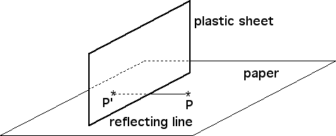

1. Linear reflection
| Draw a straight line L on a piece of paper and plot a point P on one side of the line. |
| Place the long edge of the plastic sheet on the line L; hold the plastic perpendicular to the paper. |
| Viewed from the same side of the plastic sheet as the point P, the reflection P' of P is visible on the plastic. |
| Mark the apparent position of P' on the paper. |
| Remove the plastic sheet, then connect P and P' with a line segment. |
| This segment should be perpendicular to L. |

Return to Circle Inversions with Reflections.